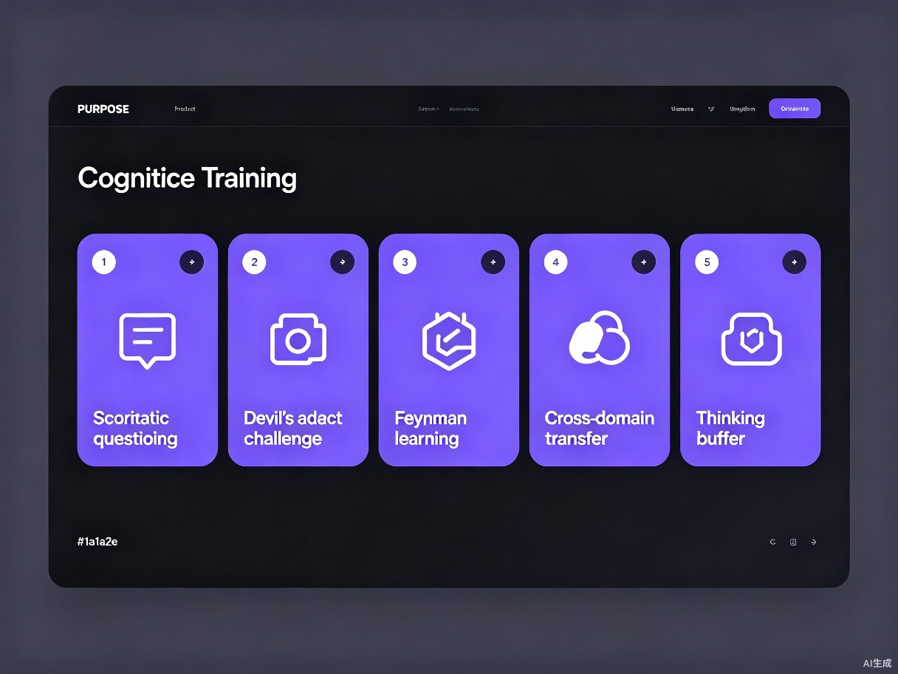

当答案变得廉价，思考成为稀缺品
"如果你希望AI成为认知升级的助力而非阻碍，可以尝试：苏格拉底式提问、故意'找茬'、费曼学习法、跨领域迁移、设置'思考缓冲区'。" —— 一次关于"为什么有了AI，认知还是无法提升"的深度对话
我们想解决什么问题
AI 大模型几乎可以回答任何问题，但很多人的认知并没有因此提升。原因是：人们把 AI 当作"答案投喂机"，逐渐丧失了深度思考、批判质疑和知识内化的能力。获取信息和认知升级，是两个完全不同的过程。
灵感来源
这个创意的诞生源于一个观察：当 AI 越来越"全知"，人类反而越来越"懒惰"。我们不再需要记忆、不需要推理、甚至不需要提问——只需要复制粘贴。但真正的认知能力（批判性思维、抽象联想、独立思考）却在退化。如果 AI 是一面镜子，它照出的应该是更强的你，而不是更依赖的你自己。
产品形态
CogniForge 是一个Web 应用，核心定位不是"问答工具"，而是"认知健身房"。它利用 AI 的强大能力，通过五种刻意设计的训练方法，对用户的思维能力进行"压力测试"和"引导升级"。
训练思考方式
谁需要认知锻造？
大学生 & 研究生
写论文时依赖 AI 生成内容，缺乏独立论证和批判性分析能力
职场知识工作者
面对复杂决策时，习惯直接要答案，缺乏系统性思考框架
终身学习者
信息过载时代，学习了很多知识却无法内化，无法跨领域迁移
使用场景
准备重要决策前
用"杠精挑战"模块 stress-test 自己的判断，提前发现盲点
学习新概念时
用"费曼工坊"验证自己是否真正理解，而非"以为自己懂了"
遇到复杂问题时
用"苏格拉底之问"层层拆解，剥离表象、触及本质
日常思维训练
每天花 10-15 分钟完成一个模块，像健身一样锻炼大脑
当前痛点
- 认知惰性：AI 的便利性让人"变懒"，长期依赖导致大脑"肌肉萎缩"
- 确认偏误：人们用 AI 强化既有观点，而非挑战自己的认知边界
- 碎片化陷阱：短视频和快餐内容摧毁了深度阅读的耐心和专注力
- 信息≠认知：收藏了 1000 篇文章不等于理解了 1 个原理
为什么这个世界需要 CogniForge？
效率提升：从"知道"到"理解"的加速器
传统学习是"输入→遗忘"的线性过程。CogniForge 通过苏格拉底追问、费曼验证、跨域迁移等方法，把学习变成"输入→加工→内化→应用"的闭环。同样的学习时间，认知留存率提升 3-5 倍。
社会价值：在 AI 时代保卫人类的思考主权
当 AI 可以替代越来越多的"答案型"工作时，提出好问题的能力、批判性思维、跨领域联想、独立思考习惯将成为人类最核心的竞争力。CogniForge 的使命不是教人用 AI，而是教人在 AI 时代保持独立思考和深度认知的能力。
五大认知训练模块
每个模块都经过精心设计，将 AI 的能力转化为对你思维能力的"压力测试"。

苏格拉底之问
AI 不回答，只追问。输入一个话题，AI 通过层层递进的提问引导你剥离表象、触及本质。每一轮回答后，追问会更深入。
杠精挑战
输入你的观点，AI 扮演"杠精"从因果混淆、选择性证据、概念偷换、反例攻击四个角度 stress-test，并给出认知强度评分。
费曼工坊
向 AI "学生"讲解一个概念，它会评估你的清晰度、准确度和完整度，并指出理解中的模糊地带和逻辑缺口。
跨界迁移
输入一个核心原理，AI 将其映射到经济学、心理学、生态学、管理学等完全不同的领域，训练类比思维。
思维缓冲
输入一个问题，系统启动 5 分钟倒计时。在此期间你必须先写下自己的思考，时间结束后 AI 的答案才解锁。最后并排对比"你的思考"和"AI 的视角"，强制培养独立思考习惯。
已完成可体验 Demo
基于 TRAE 的开发能力，我们已完成完整的可运行 Demo，包含：
🔧 后端架构
5 个核心模块 API + 进度追踪系统 + 徽章成就系统
🎨 前端体验
响应式设计、深色科技主题、交互动画、本地存储
Demo 模式亮点
为了让评委能够无需配置 API 密钥即可完整体验，我们内置了精心设计的模拟数据。每一个追问、每一个攻击角度、每一个类比都经过打磨，旨在展示产品的深度和价值。同时后端预留了真实 AI 接口（OpenAI/Claude），切换 `demo` 参数即可接入大模型。
准备好锻造你的认知了吗？
在 AI 可以回答一切的时代，
真正的竞争力不在于你知道多少，
而在于你能提出多么深刻的问题。